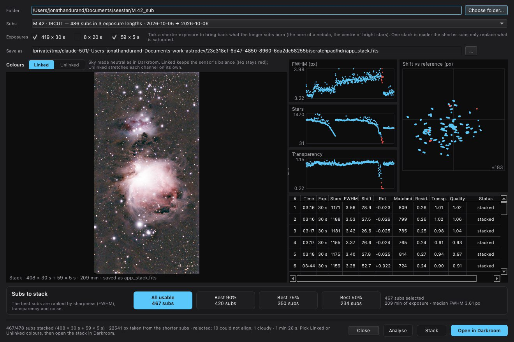

Stacking
Stack tool
Stacks a folder of sub-exposures: standard stack, automatic HDR stack, automatic comet stack.
How to use it

- Click Stack and choose the folder of sub-exposures.
- Tick what applies: several exposure times (Exposures) for the HDR stack, Stack on a comet for a comet. Then Analyse.
- Choose the subs to keep and the reference, then Stack. Open in COSMO opens the result.
Settings
- Exposures
- One box per exposure time found in the folder; tick those to stack together.
- Stack on a comet
- Looks for a comet by its motion and writes the combined image, the comet stack and an animation.
- Best 90 / 75 / 50 %, or a custom share
- The share of the best subs to keep, to the percent.
- Reference
- The sub the others are aligned on.
When to use it
First, to turn raw sub-exposures into a stack. The HDR mode combines long and short exposures of the same target; the comet mode finds the comet by its motion and writes the combined image, the comet stack and an animation.
Image
Works on a folder of raw sub-exposures.
Examples

 long exposuresHDR stack
long exposuresHDR stack

 aligned on the cometcombined
aligned on the cometcombined